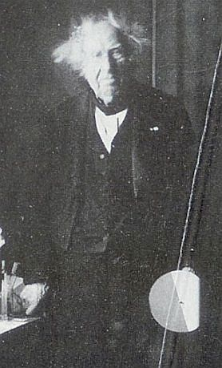

Eugène Chevreul 
Chevreul debout, à l'entrée de son laboratoire à l'atelier des Gobelins, ca. 1883
____1)- biographie
2)- critique de l'Histoire de la Chimie de Ferdinand Hoefer (14 articles)
3)- critique d'Artéfius, à propos du Clavis Major Sapientiae
4)- critique de Cambriel
5)- considérations sur l'espèce minéralogique et chimique
6)- Résumé d'une histoire de la Matière - Atlas - Tableau des connaissances humaines - la médecine selon Paracelse -
7)- critique d'une histoire de la magie -
8)- méthode a posteriori de Newton et méthode a priori de Leibniz -
9)- distributions des connaissances humaines du ressort de la philosophie naturelle -
10. De l'Abstraction considérée relativement aux Beaux-Art et à la Littérature -
11. sur Isidore Geoffroy Saint Hilaire [contient des extraits de l'Enchidion de Jean D'Espagnet et des Aphorismes Basiliens de Nicolaus Niger Hapellius]
revu le 29 août 2004
Plan des quatorze sections :I. biographie d'Eugène Chevreul : 1. introduction - 2. notice historique de Berthelot - 3. article de L. Mangin - 4. Chevreul et les corps gras de Ch. Moureu -
II. Etudes historiques [1ère section]
I. Introduction - II. 1er article 1. Etendue de la chimie - 2. diverses classes de connaissances chimiques - 3. Notions qui peuvent paraître indépendantes de la chimie - Conclusion relative à la manière de composer une histoire de la chimie -
III. 2ème article : Ière époque - Ière section - I. Chinois - II. Indiens (Indonésiens) - III. Égyptiens, Phéniciens, Hébreux - IIème section - De 640 ans avant J.-C. au IIIe siècle après J.-C. - IV. Grecs, Romains - A. Partie théorique - Systèmes des philosophes de la Grèce - B. Partie pratique - 1. Chimie minérale - 2. Chimie organique -
IV. 3ème article : Ière ÉPOQUE. - 3ème SECTION. Du IIIe siècle au IXe siècle après J. C. - Firmicus - Zosime - Pélage - Olympiodore - Pseudo-Démocrite - Synésius - Marie - philosophe chrétien (anonyme) - lsis (à Horus) - Marcus Graecus - Thémiste - Turba -
Notes - 1. Jamblique - 2. Proclus - 3. Egypte (sphinx - Osiris - Isis - Horus - scarabée - ) -III. Etudes historiques [2ème section]
4ème article : Ière section - du IXe au XIIIe siècle [Geber, Razis, Avicenne, Alphidius, Morienus, Artephius, Senior, etc.] -
5ème article : IIème section - du XIIIe au début du XVIe siècle [Albert le Grand, Roger Bacon, saint Thomas d'Aquin, Arnaud de Villeneuve, Raymond Lulle, Ortholain, Nicolas Flamel, Isaac Le Hollandais, Basile Valentin] -
6ème article : IIIème époque : du XVIe au début du XIXe siècle [Paracelse - chémiatrie] -
7ème article : chimie métallurgique [Agricola - Biringuccio - Cesalpin - Perez de Vargas] - chimie technique : [Palissy - Porta] - Alchimie : [Zachaire - Vigenère - Barnaud - Grosparmy - Valois - Vicot] -
8ème article : IIIème époque comprenant le XVIIe siècle - Van Helmont -
9ème article : système de Van Helmont [éléments, productions séminales, ferments, âmes, formes, corps célestes] - Notes sur une transmutation à laquelle asssita Van Helmont -IV. Etudes historiques [3ème section]
10ème article : Robert Boyle - Robert Fludd (Fluctibus) - Glauber -
11ème article : Kunckel - Sala - Tachenius - Homberg - médecins chimistes [Davissone - Ettmüller - Sylvius - Hofmann] - pharmaciens [Nicolas Lefebvre - Christophle Glaser - Nicolas Lemery - Joachim Becher - Jean Rey - Jean Mayow] -
12ème article : Hales - Joseph Black - travaux des Italiens - travaux des Anglais [Isaac Newton] - travaux des Allemands - savants danois - savants de l'Empire russe - savants des Pays-Bas [Hermann Boerhaave] - chimistes français antérieurs à Lavoisier [Etienne-François Geoffroy - Geoffroy le Jeune - Louis Lemery - Hellot - Boulduc - Guillaume François Rouelle - Théodore Baron - Macquer - Duhamel du Monceau - Grosse - Cadet - Réaumur - Notes [Boyle 1, 2 - Fludd - Glauber - Homberg - marquise de Brinvilliers - Glaser - Nicolas Lemery - Becher - Black - Boerhaave - Geoffroy - Louis Lemery - Hellot - Rouelle - Macquer - du Monceau - Réaumur] -V. Etudes historiques [4ème section]
13ème article : Stahl - PROPRIÉTÉS ESSENTIELLES ET CARACTÉRISTIQUES DU PHLOGISTIQUE - DES CORPS MINÉRAUX CONSIDÉRÉS EN GÉNÉRAL, PAR RAPPORT AU PHLOGISTIQUE - DES CORPS MINÉRAUX DÉPOURVUS DE PHLOGISTIQUE - DU PHLOGISTIQUE DANS LES CORPS VIVANTS - DU PHLOGISTIQUE DANS L'ATMOSPHÈRE - MANIÈRE DONT STAHL A ENVISAGÉ LA FERMENTATION - STAHL A MÉCONNU L'EXISTENCE DES GAZ ET L'ACTION CHIMIQUE DE L'AIR -
14ème article - Pott Eller Newmann Marggraf CHIMISTES SUÉDOIS : Brandt - Wallerius - Swedenborg - Swab - Cronstedt - Scheffer - Faggot - Brouwall - Funck - Bergmann - Scheele - Priestley - Conclusion - Notes : 1-2. Stahl - 3. Margraff - 4. Brandt - 5. Swendenborg - 6. Cronstedt - 7. Scheele - 8. PriestleyVI. Critique d'Artéfius
VII. Critique de Cambriel
VIII. Critique de Jacques-Joseph Ebelmen suivi de Considérations sur les espèces minéralogiques et chimiques -
IX. Résumé d'une histoire de la Matière - Atlas des connaissances humaines - tableau de la science de l'antiquité et du Moyen Âge - Idées relatives à la médecine selon Paracelse, Van Helmont et J.B. Porta
voir Introduction à l'Idée alchimique -
X. Critique d'une histoire de la magie [Eusèbe Salverte]
XI. CONSIDÉRATIONS GÉNÉRALES SUR LES MÉTHODES SCIENTIFIQUES ET APPLICATIONS A LA MÉTHODE A POSTERIORI DE NEWTON ET A LA MÉTHODE A PRIORI DE LEIBNITZ
XII. Distribution des connaissances humaines du ressort de la philosophie naturelle
XIII. De l'Abstraction considérée relativement aux Beaux-Arts et à la Littérature
XIV. HISTOIRE NATURELLE générale des règnes organiques, principalement étudiée chez l'homme et les animaux, par Isidore Geoffroy Saint-Hilaire. Paris, librairie de Victor Masson, place de l'Ecole-de-Médecine, n° 17, 1854 et 1859. 5e article - JOURNAL DES SAVANTS. — OCTOBRE 1864